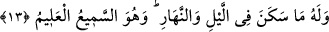

“Allahım alnımız terlemeye başladığı, iniltimiz arttığı, dostlarımız bize ağladığı ve
doktorlar bizden ümidini kestiği vakit sen bize merhamet eyle!
Allahım, toprak bizi örttüğü, dostlarımız bize veda ettiği, nimetler bizden
uzaklaştığı ve ruh bu tenden ayrıldığı vakit sen bize merhamet eyle!
Allahım, ismimiz unutulduğunda cismimiz toprağa karıştığında, kabrimiz
kaybolduğunda ve adımız anılmaz olduğunda sen bize merhamet eyle!
Allahım, bütün sırların ortaya döküldüğü, içtekilerin açıklandığı ve hesap
defterlerinin dağıtıldığı ve terazilerin kurulduğu gün sen bize merhamet eyle!
Ey Hayy, Kayyûm, Rahmân ve Rahîm olan Allahım! Ancak senin sonsuz
merhametine sığınırız.”
Bu, Hz. Şeyh Muhyiddîn İbnü’l-Arabî’nin münâcâtıdır. Hayatıma yemin olsun ki;
değerli bir münâcât, güzel bir duadır.
13. Gecede ve gündüzde barınan her şey O’nundur. O her şeyi işitendir, bilendir.
Rivayet edilir ki, Mekkeli müşrikler Rasûlullah (s.a.)’in huzuruna gelip şöyle dediler:
“Ey Muhammed, biz biliyoruz ki, seni böyle bir davaya kalkışmaya sevkeden şey
fakirlik ve ihtiyaçtır. Kabilelerden senin için yardım toplayalım. İçimizde en zengin
adam sen ol. Yeter ki bu davadan vazgeç.” İşte inkârcıların bu sözleri üzerine Allah
Teâlâ bu âyeti indirdi.
Âyetin mânâsı şöyledir: “Gecede ve gündüzde barınan, üzerine güneşin doğup battığı
her şeyin yegâne sahibi Allah’dır. Eğer O dilerse, peygamberine mal mülk verir ve
insanların en zengini kılar.”
Gece ve gündüzden birer mekan gibi bahsedilerek zamanla kayıtlı varlıkların onlarda
barındığı ifade edilip onlara nisbet edilmiştir.
“O, herşeyi işitendir, bilendir.” İşitmeye konu olan her şeyi fazlasıyla işitir ve
bilmeye konu olan her şeyi ziyâdesiyle bilir. Öyle ki, yapılan işlerden ve söylenilen
sözlerden hiç biri O’ndan gizli kalmaz.
Haberde şöyle vârid olmuştur: “Allah Teâlâ, karanlık ve aydınlık iki cevher
yaratmıştır. Nurlu olan herşeyi, aydınlıktan çıkartmış, gündüzü de aydınlığın nuru ile var
etmiştir. Aydınlığın geri kalanı ile de ateşi -yani cehennemi- yaratmıştır. Karanlık olan
her şeyi de karanlık cevherden çıkartmış, geceyi de ondan yaratmıştır. Karanlığın geri
kalanı ile de cenneti yaratmıştır. Şu halde gece cennetten, gündüz ateştendir.” Bu
sebeple geceleri ünsiyet daha fazladır. Gece, sevenlerin dostu, sevilenlerin gözünün
nurudur. Nitekim âyette gece, gündüzden önce zikredilmiştir. Çünkü gece Yaratan’a,
gündüz ise yaratılana hizmet içindir.
Peygamberlerin mîrâca yükselmeleri geceleyin olmuştur. “Bin aydan hayırlı” olan